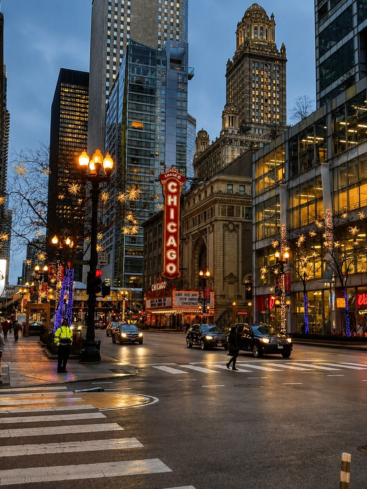
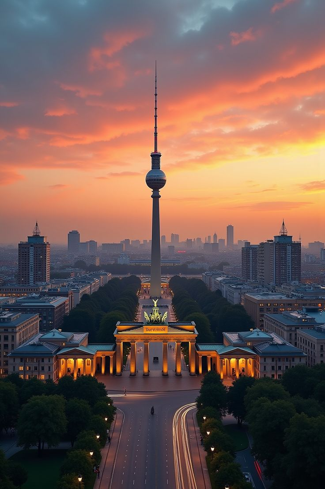
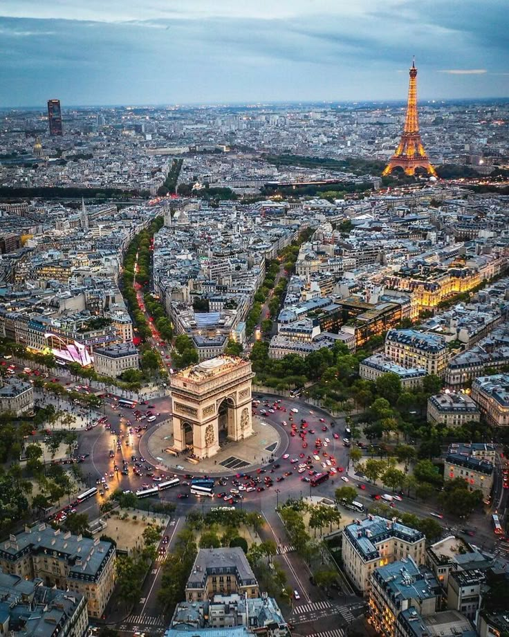
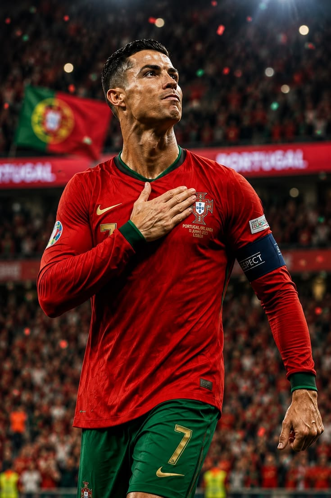

HTML IMAGES
Chicago

Chicago is among the one of the Largest cities in the USA.
- Population : 45 million
- Currency : US Dollars
- Staple Food: Seafood
- Language Spoken : English
Nairobi

This is one of Africa's only city which has a National Park in it.
- Population : 10 million
- Currency : Kenyan Shillings
- Continent : Africa
- Language : Swahili and English
Seoul

Seoul is the massive, high-tech capital and cultural heart of South Korea, where centuries-old royal palaces sit right next to glittering skyscrapers.
- Location : Asia
- History : Historic sites like Gyeongbokgung Palace date back to the Joseon Dynasty.
- Entertainment : K-pop, K-dramas, and a 24-hour food and nightlife scene drive global tourism
- Geographical Layout : The northern side holds the deep historical roots and ancient palaces.
San Paolo
 - 2011.jpg)
San Paolo is the home to many native people who are God driven.
- Location : Brazil
- History : Its among the oldest cities in the world.
- Geographical layout : It seats near brazil's coastal line.
- Population : 35 million
Germany

Berlin is the home to many international residents across the world and it offers top notch education.
- Population : 45 million
- Language : German
- Currency : Euros
- Geolocation : Eastern Europe
Paris

Paris is among one of the best toursit destinations in the world and has the iconic Ifel Tower in the city square
- Location : Near lake Como
- Tourst Attraction: Beacause of the Ifel Tower
- Famous Food : Maccaron and Cheese
- Language : French
Kyoto

Kyoto is a major historic city on Honshu island in Japan that served as the nation's imperial capital from 794 until 1868.
- Landmakrks : Home to roughly 2,000 Buddhist temples and Shinto shrines, including 17 designated as UNESCO World Heritage Sites.
- Culture : It is considered the cultural capital of Japan and escaped major destruction during World War II.
- Geograpgical layout : Located in a basin surrounded by mountains on three sides in the Kansai region.
- Best Known About: Kyoto is best known as the cultural heart of Japan, famous for preserving thousands of classical Buddhist temples, Shinto shrines, and traditional wooden architecture
Cristiano Ronaldo
Cristiano Ronaldo

Ronaldo is one of the most decorated players in the history of professional football, having won 35 trophies in his career, including five UEFA Champion
- Age : 41 years
- Born : February 5, 1985, in Madeira, Portugal.
- Major Achievements :He stands alone at the absolute top of the sport with 979 official career goals scored for both his clubs and the Portugal national team
- Records : Played for top clubs including Manchester United, Real Madrid, Juventus, and Al Nassr.
- Playing style :Dribbling, flair, and creativity.
Dembele

is a French professional footballer widely considered one of the most explosive, talented, and elite wingers in the world.
- Career Journey :Paris Saint-Germain (2023 Present): Returned to France and underwent a massive career transformation under manager Luis Enrique, evolving into a lethal, disciplined talisman.
- Career Achievemts :Champions League Dominance: Anchored PSG to back-to-back continental glory.
- Playing Style : Ousmane Dembélé's playing style is defined by one rare, defining trait: he is completely ambidextrous (two-footed), making him one of the most unpredictable attackers in world football.
- Age : 29 years old
- Born : He was born on May 15, 1997 in Vernon , France
Robert Lewandoski

is a Polish professional footballer widely regarded as one of the greatest strikers of all time
- Age :38 years
- Born: 21st August 1988
- Nationality :Polish
- National Team : Poland National Team
- Football Style : Stricker
Olise

A elite professional footballer who has rapidly emerged as one of the best creative wingers and playmakers in the world.
- Age : 24 years
- Nationality :French
- Born :12
| Decemeber 2001
- National Team : France National Team
- Fcats : Ice Cold Celebrations: When he scores, he often refuses to celebrate, choosing to just shrug or walk back to the center circle.
Haaland

He is a Norwegian professional footballer who is widely considered the most dominant and clinical central striker in modern world football
- Age
- A 26 year old
- Nationality
- A Nowergian .
- Born
- He was born in Leeds, United Kingdom.
- Year Born
- 21 July 2000.
- Football Style
- Erling Haaland, you must focus entirely on extreme physical efficiency, smart movement, and lethal one touch finishing. He does not waste energy dribbling or passing; he waits for the perfect moment to strike.